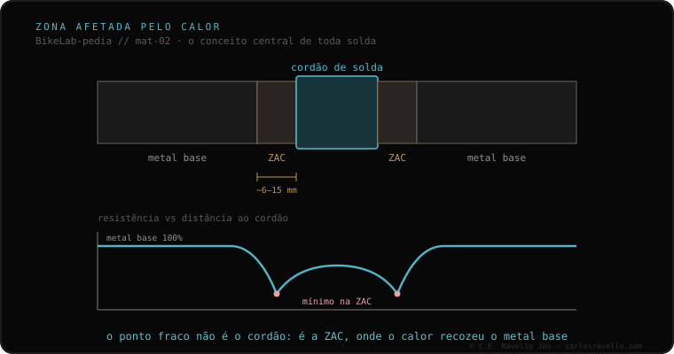

Quando se solda um tubo, o metal não muda só no cordão. Ao redor há uma faixa —a zona afetada pelo calor (ZAC; em inglês HAZ)— onde o material chegou a uma temperatura suficiente para alterar suas propriedades sem fundir. É nessa faixa que quase sempre se decide o comportamento da junta. Por isso um quadro às vezes quebra a alguns milímetros AO LADO da solda, não no cordão: a ZAC é o ponto fraco. Quanto enfraquece e se recupera depende do material.
É o conceito do qual tudo o mais depende quando falamos de soldar um quadro. Entendê-lo muda como você lê uma fratura.
O cordão é a parte que fundiu e voltou a solidificar. Mas o calor não para na borda do cordão: ele se propaga para o metal base e cria um gradiente. Bem ao lado há uma faixa —de poucos milímetros— que nunca chegou a fundir, mas alcançou temperaturas altas. Essa passagem pelo calor reordena a estrutura interna do metal: recoze, amolece ou muda as propriedades, conforme o material. Essa faixa é a zona afetada pelo calor. Você não a vê a olho nu, mas é onde a fraqueza se concentra.
Daí o dado prático que mais surpreende quem quebra um quadro: a fratura não aparece no cordão, e sim ao lado dele. O cordão, recém-fundido e solidificado, costuma ficar mais resistente que a faixa recozida que o rodeia. Quando a junta cede, cede pelo elo mais fraco, e esse elo é a ZAC.
O que ocorre na ZAC não é universal: depende do material. O alumínio 6061 perde a têmpera ali e, para recuperá-la, precisa passar por forno. O 7005 recupera ao ar, sozinho, com o tempo. O aço e o titânio se comportam de outra forma ainda. Não há uma única resposta para "quanto enfraquece a ZAC?": a resposta começa por perguntar de que material é o quadro.

A ZAC é a porta de entrada para o resto do cluster. Quanto enfraquece e se recupera depende da liga: aí entra o alumínio 6061 vs 7005. E como a faixa enfraquecida é onde o dano se acumula com o uso, conecta diretamente com a conversa com quem vai soldar —se o material exigir, restituir a ZAC é um dos passos que vale a pena perguntar—.
Se você vê uma marca perto de uma solda e tem dúvida do que está olhando, mande o caso. Damos o idioma para entendê-lo, sem te vender nada. Fale conosco no WhatsApp
É a faixa de metal que envolve o cordão de uma solda. Não funde, mas chega a uma temperatura suficiente para alterar suas propriedades. É nessa faixa que quase sempre se decide o comportamento da junta, e por isso costuma ser o ponto fraco.
Porque o ponto mais fraco não é o cordão, e sim a ZAC: a faixa de alguns milímetros junto ao cordão onde o calor alterou o metal base sem fundi-lo. Por isso muitas fraturas aparecem a milímetros ao lado da solda.
Depende do material. O alumínio 6061 perde a têmpera ali e precisa de forno; o 7005 recupera ao ar com o tempo; o aço e o titânio se comportam de outra forma. Não há resposta única: depende de que material é o quadro.
© 2026 BikeLab Studio. Conteúdo sob CC BY 4.0: você pode copiar, traduzir e publicar, inclusive com fins comerciais. A citação é obrigatória. Sem atribuição, a licença é revogada automaticamente (CC BY 4.0, §6.a) e o uso passa a ser violação de direitos autorais: solicitamos a retirada do conteúdo e sua desindexação. · Design e propriedade: Carlos Ravello Joo